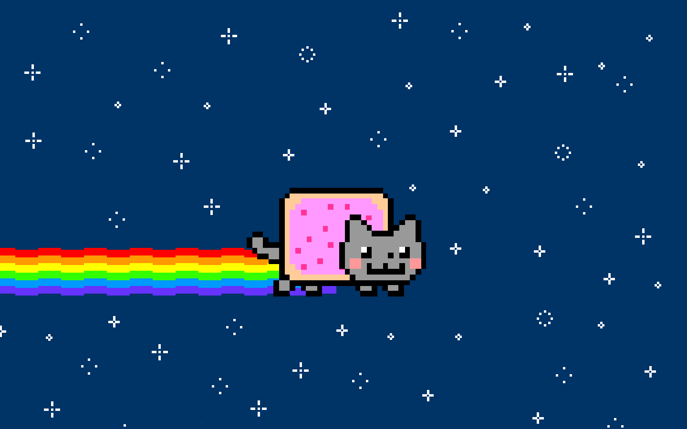

Images
- Controlling the size of images in CSS
- Aligning images in CSS
- Adding background images
Controlling the sizes of images in CSS
- You can control the size of an image using the width and height properties in CSS, just like you can for any other box.
- A method of keeping uniform images across a website is to give images class names such as "small", "medium" and "large"

Aligning images using CSS
- Just as you can use it with text, you can use the float element to move an image to the left or right of its containing block allowing text to flow around it.
- A common way of applying floats to elements is to create a new class which floats them in a specific way such as "align-left" and "align-right"
Centering images using CSS
- By default, images are inline elements. This means that they flow within the surrounding text. In order to center an image, it should be turned into a block-level element using the display property with a value of block (display: block;)
- Once it has been made into a block lelvel element, there are two common ways you can centre an image:
- On the containing element, you can use text-align: centre;
- On the image itself, you can use margin: 0px auto
Background Images
- The background-image: url("mybackground.gif") allows you place an image behind any html element. By default, the image will repeat to fill the entire box.
Repeating Images
- The background-repeat property can have four values:
- background-repeat: repeat; The background image is repeated horizonatally and vertically. (the default method if background-repeat is not used.)
- background-repeat: repeat-x; The image is repeated horizontally.
- background-repeat: repeat-y; The image is repeated vertically.
- background-repeat: no-repeat; This image is shown only once.
- The background-attachment specifies whether a background image should stay in one position or move as the user scrolls up and down the page. It can have one of two values:
- background-attachment: fixed; The background image stay in the same position on the page
- background-attachment: scroll; The background image moves up and down as the user scrolls up and down the page
Background Position
- When an image is not being repeated, you can used the background-position property to specify where in the browser window the background image should be placed.
- This property usually has two values, one for the horizontal position and the other for vertical. e.g. background-position: top right
- If you only specify one value, the second value will default to center
- You can also use a pair of pixels (background-position: 250px 350px;) or percentages (background-position: 50% 60%;) with 0,0 in each case starting from the top left of the browser window.
Shorthand: Background
- The background property acts like a shorthand for all of the other background properties above, and also the background-color property.
- The properties must be sepcified in the following order, but you can miss any value if you do not want to specify it.
- background-color
- background-image
- background-repeat
- background-attachment
- background-position
- For example background: blue url("Images/Background.gif" repeat fixed center center)